p01 · 明月松间照，清泉石上流。
山间溪流与两侧松群 · 待审美确认
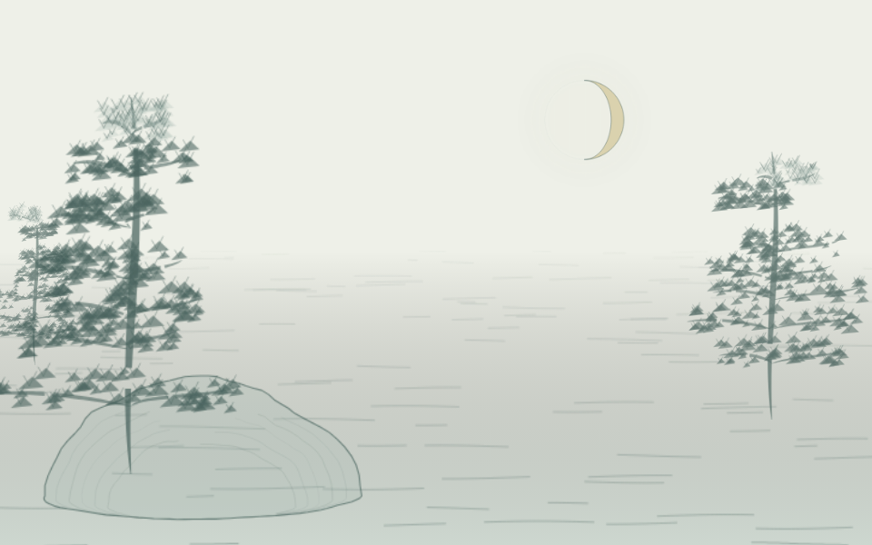
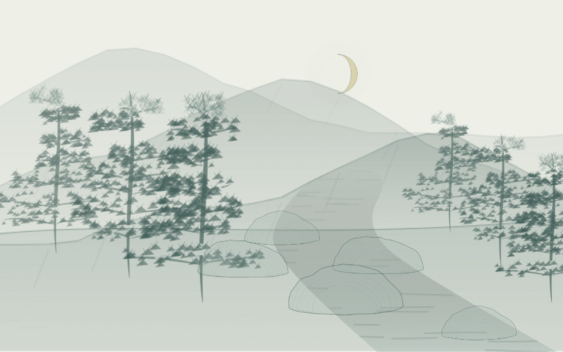
山间溪流已分松群、溪石和窄水域；水流绕石、明暗层次仍待审美确认
查看通路检查
测试物象匹配 4/4 → 4/4，不评价构图好坏。仍未画出：本样例主体均有基础画法；完整关系仍需检查
这轮重点改地形承托、群落密度与相对尺度。左边为上次保存的画面，右边为当前试画；每幅继续保留待改之处。
本页使用人工编写的固定语义样例，零模型调用。背景依托是本地构图推断，明确数量优先于场景疏密；自动检查通过不代表审美通过。
山间溪流与两侧松群 · 待审美确认


山间溪流已分松群、溪石和窄水域；水流绕石、明暗层次仍待审美确认
测试物象匹配 4/4 → 4/4，不评价构图好坏。仍未画出：本样例主体均有基础画法；完整关系仍需检查
地面承托、屋舍与树群 · 待审美确认
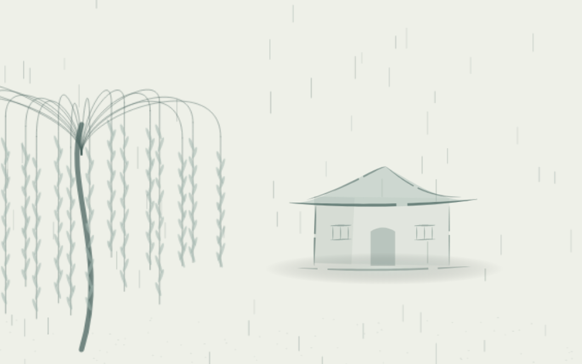
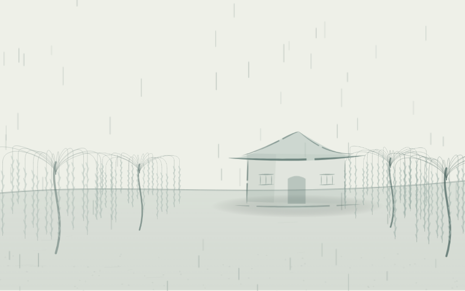
客舍与几株小柳已有共同地面和高低比例；渭城只作背景语境，不复原城市地标
测试物象匹配 4/4 → 4/4，不评价构图好坏。仍未画出：本样例主体均有基础画法；完整关系仍需检查
基础意象组合 · 待审美确认
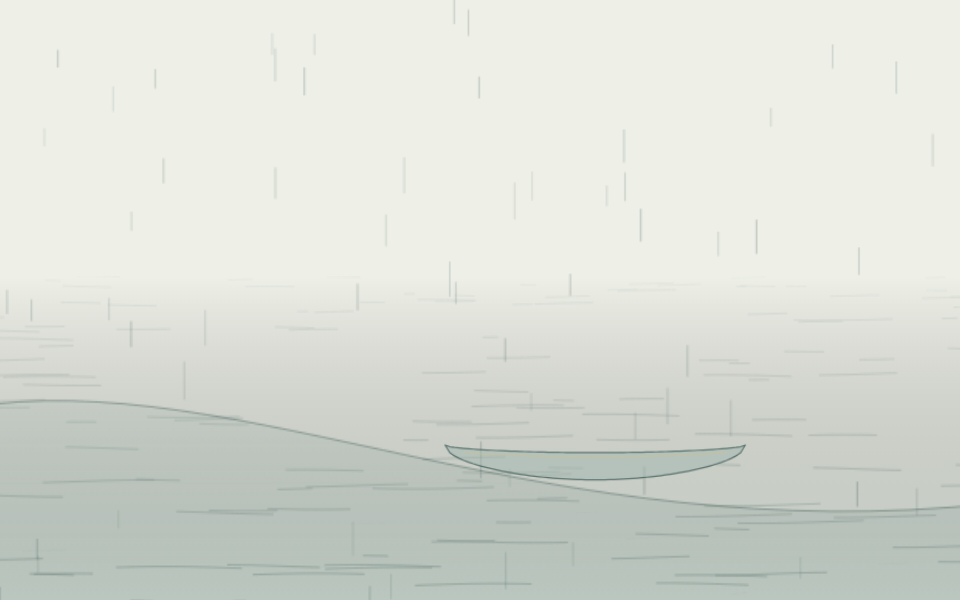
潮水与普通水纹的区别尚未完成；野渡可试画岸形，码头、舟水物理承载和横泊仍未做；无人已从全景冻结提示中排除，但完整否定范围仍待分析
测试物象匹配 4/4 → 4/4，不评价构图好坏。仍未画出：本样例主体均有基础画法；完整关系仍需检查
基础意象组合 · 待审美确认

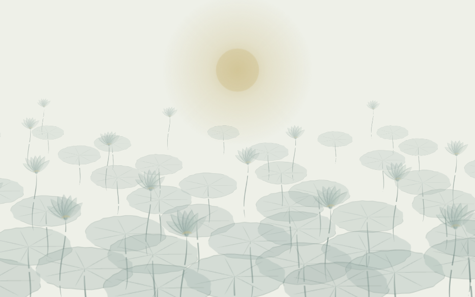
花叶群和日光符号已有试画，红碧对照与光照仍需加强；花叶的遮挡、姿态与群落构图仍待改画
测试物象匹配 3/3 → 3/3，不评价构图好坏。仍未画出：本样例主体均有基础画法；完整关系仍需检查
基础意象组合 · 待审美确认

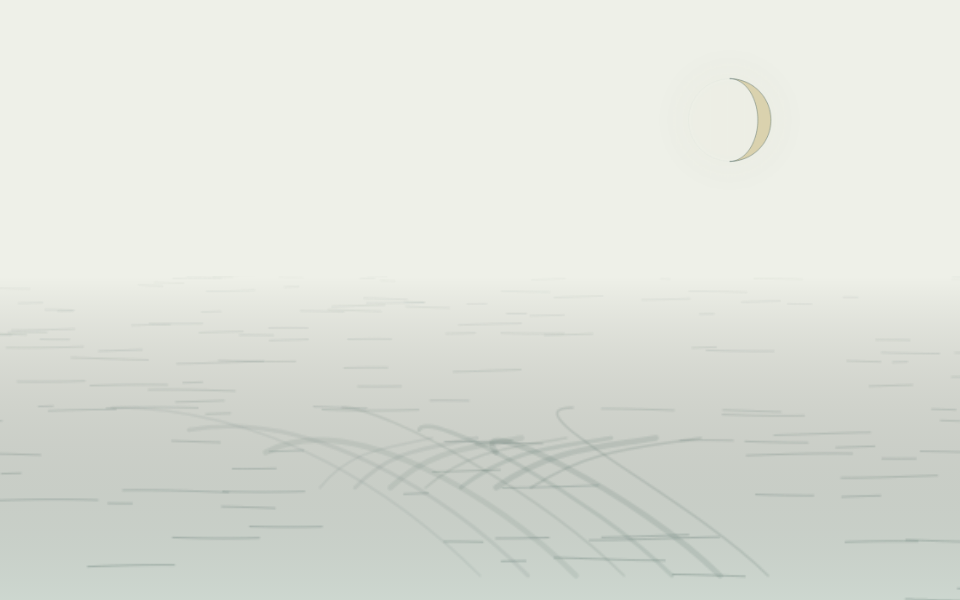
疏影已用局部影痕试画，尚未表达完整倒影与清浅层次；暗香保留为嗅觉线索，不强行可视化
测试物象匹配 3/3 → 3/3，不评价构图好坏。仍未画出：暗香
基础意象组合 · 待审美确认

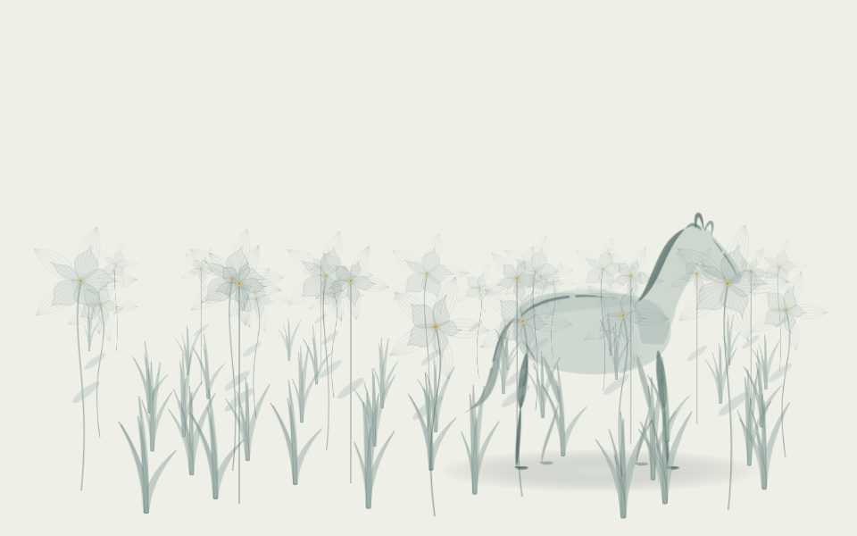
马蹄已允许借形为整匹马；蹄数不等于马匹数；花草的高度联系与渐变过程尚未实现，奔跑步态未做
测试物象匹配 3/3 → 3/3，不评价构图好坏。仍未画出：本样例主体均有基础画法；完整关系仍需检查
基础意象组合 · 待审美确认
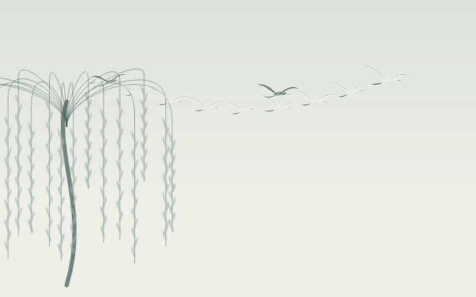
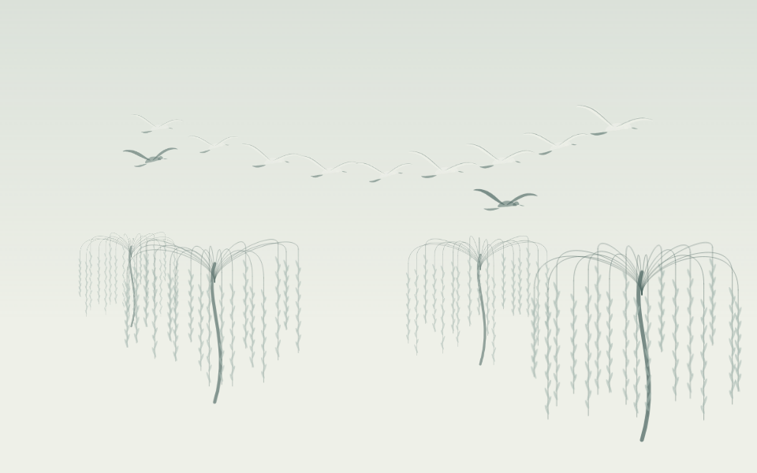
黄鹂与白鹭共用写意鸟形，明确的两个与一行分别处理；已有翼姿微动，完整上升飞行轨迹及鸣声未做
测试物象匹配 4/4 → 4/4，不评价构图好坏。仍未画出：本样例主体均有基础画法；完整关系仍需检查
竹丛、花树与岸面 · 待审美确认

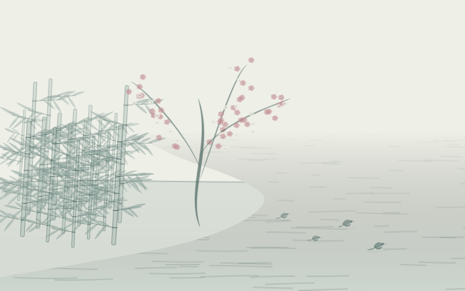
桃花以一株疏花树组织三根主花枝，竹与桃沿同一岸面分内外；枝叶自然度、根部遮挡待打磨
测试物象匹配 4/4 → 4/4，不评价构图好坏。仍未画出：本样例主体均有基础画法；完整关系仍需检查
深林、苔面与碎光 · 待审美确认
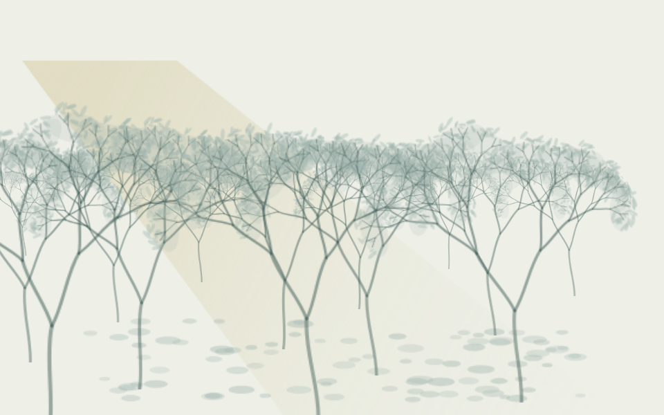

返照改为林下碎光斑，林冠与苔面分层；不模拟真实穿林光路，明暗氛围待确认
测试物象匹配 3/3 → 3/3，不评价构图好坏。仍未画出：本样例主体均有基础画法；完整关系仍需检查
曲径、密林与寺院 · 待审美确认
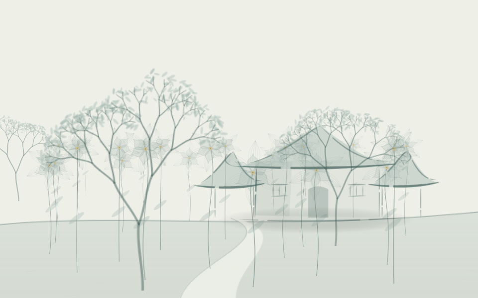
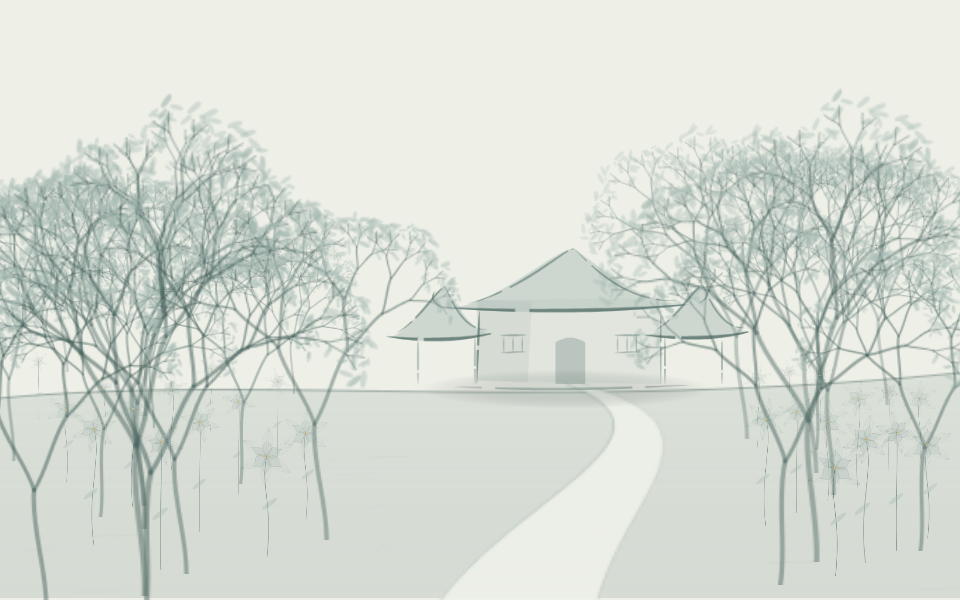
花木按深林加密并为寺院留出开口，曲径引向屋舍；自然遮挡与花丛形态待改进
测试物象匹配 4/4 → 4/4，不评价构图好坏。仍未画出：本样例主体均有基础画法；完整关系仍需检查
近岸人影与江月 · 待审美确认
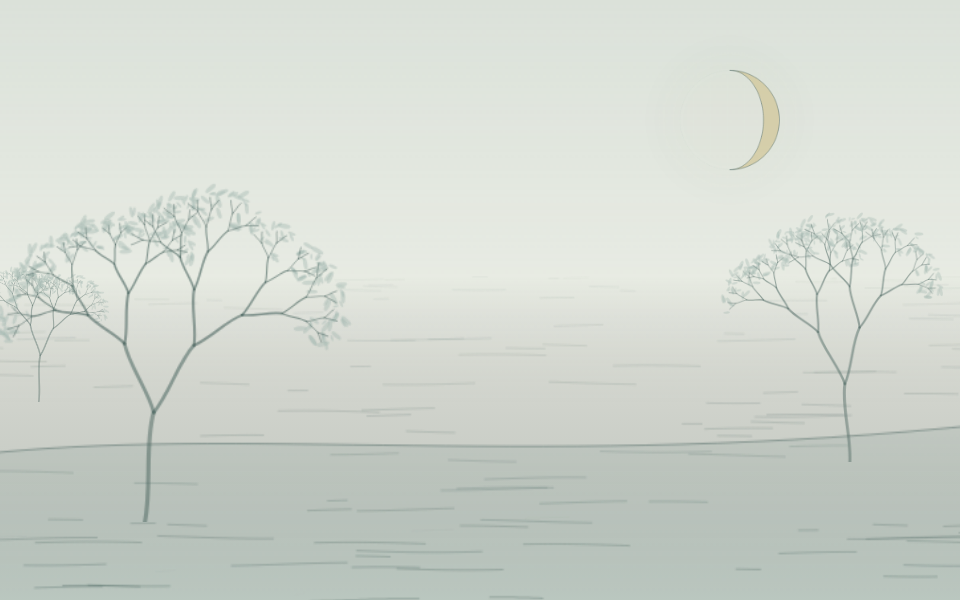

已有虚写人影与近岸落点；低天、近月及观看视点仍需加强
测试物象匹配 5/6 → 6/6，不评价构图好坏。仍未画出：本样例主体均有基础画法；完整关系仍需检查
寒江、孤舟与钓者 · 待审美确认

明确钓者已有淡墨蓑笠、衣影与钓线，并依附舟身随拖动；坐姿、蓑衣质感及雪中氛围待审美确认
测试物象匹配 3/4 → 4/4，不评价构图好坏。仍未画出：本样例主体均有基础画法；完整关系仍需检查
地面承托、屋舍与树群 · 待审美确认
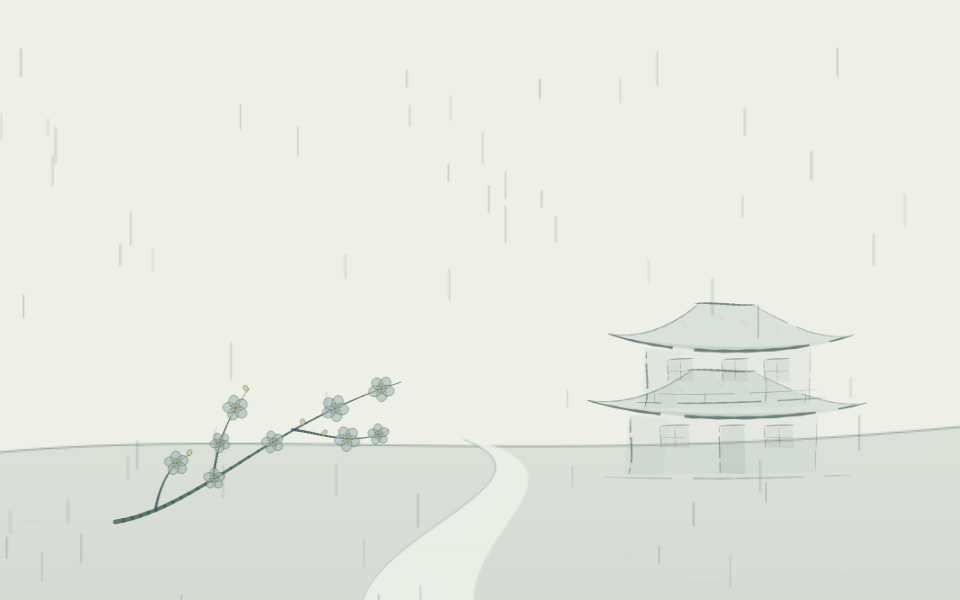
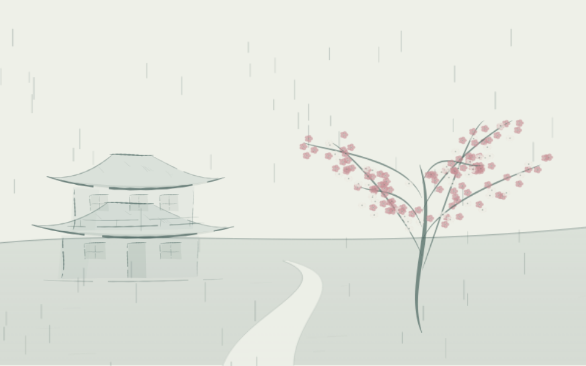
杏花改为有地面落点的整株疏花树，与楼巷分左右；借形是本地构图，尚未表现卖花活动及夜雨到明朝的时序
测试物象匹配 4/4 → 4/4，不评价构图好坏。仍未画出：本样例主体均有基础画法；完整关系仍需检查
基础意象组合 · 待审美确认
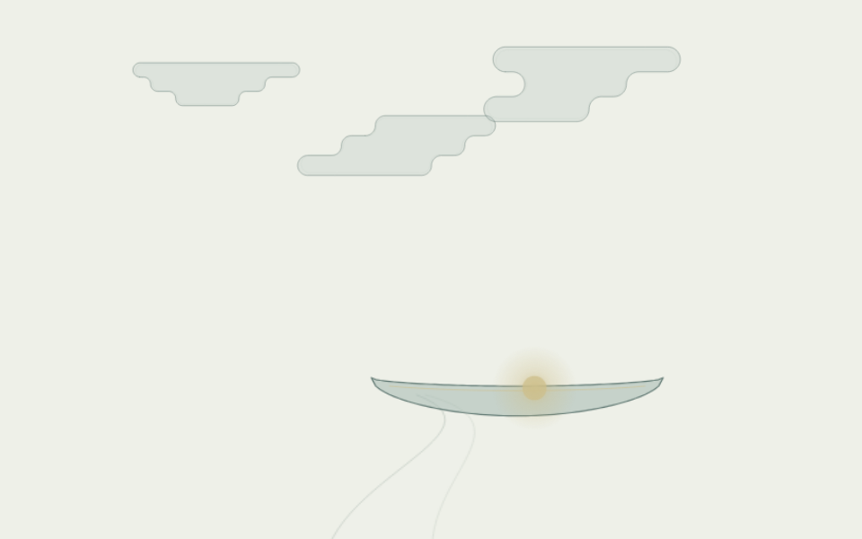
已有野径、江船与局部灯火符号；夜色配色、光源附着及水面反光仍需改进
测试物象匹配 4/4 → 4/4，不评价构图好坏。仍未画出：本样例主体均有基础画法；完整关系仍需检查
山体、岩壁与瀑流 · 待审美确认
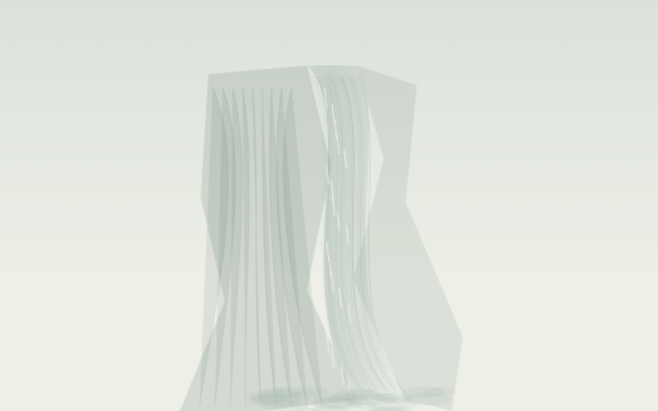

瀑布已配山体依托、岩壁和纵向水线；山势自然度、落差与喷溅仍需打磨，银河仍是比喻参照
测试物象匹配 2/2 → 2/2，不评价构图好坏。仍未画出：银河
基础意象组合 · 待审美确认

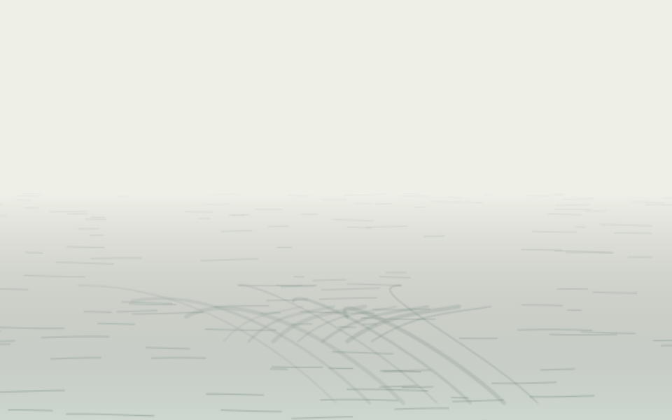
细流和树阴已有水面与局部影痕试画；泉眼局部结构、水流尺度与晴柔光感仍需改善
测试物象匹配 4/4 → 4/4，不评价构图好坏。仍未画出：本样例主体均有基础画法；完整关系仍需检查
基础意象组合 · 待审美确认
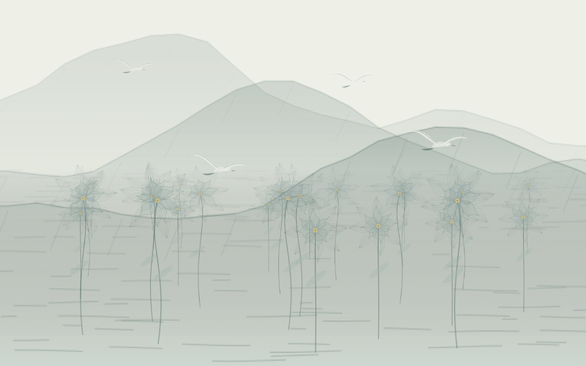

鸟已可用通用浅色鸟形表现；山、水、花可以组合；诗句指定的局部颜色和远近主次仍需加强，欲燃不当作起火
测试物象匹配 4/4 → 4/4，不评价构图好坏。仍未画出：本样例主体均有基础画法；完整关系仍需检查
基础意象组合 · 待审美确认

星点、平野、月体与大江已有基础组合；月涌的动态解释、水中反光与视点关系仍需完善
测试物象匹配 4/4 → 4/4，不评价构图好坏。仍未画出：本样例主体均有基础画法；完整关系仍需检查
基础意象组合 · 待审美确认
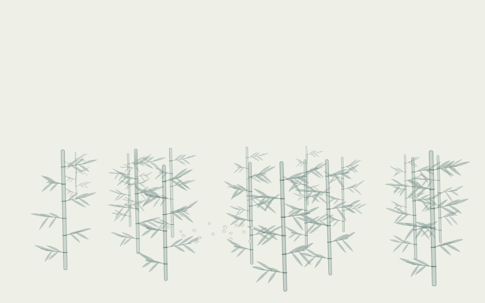
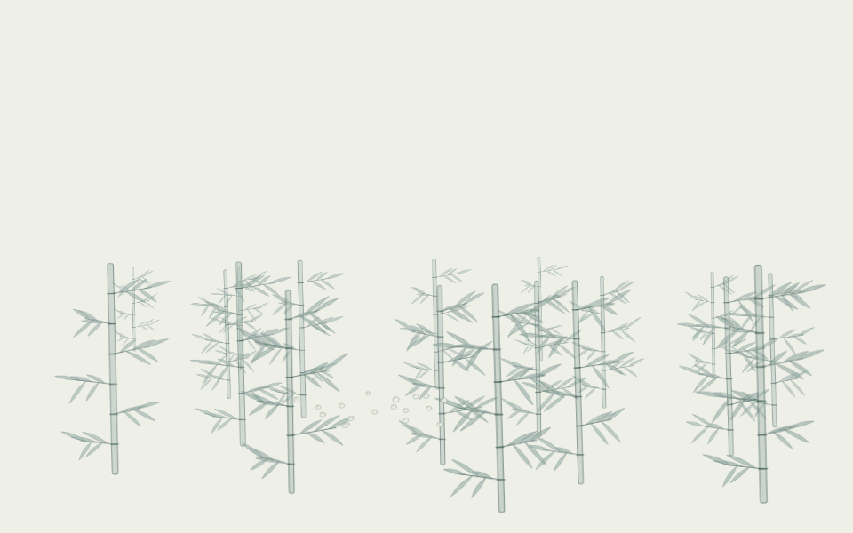
露珠尚未自动附着到竹叶；滴落与清响未做；荷香不直接补为可见荷塘或烟线
测试物象匹配 2/3 → 2/3，不评价构图好坏。仍未画出：香气
开阔水田与远近林带 · 待审美确认

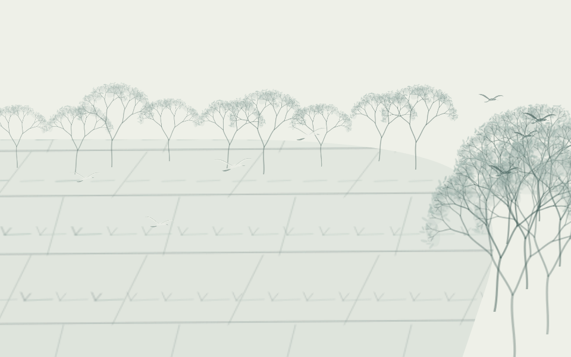
水田扩大至中远景并保留前景开阔面，树群改为远处林带与右侧近林；密度和分布待审美确认
测试物象匹配 4/4 → 4/4，不评价构图好坏。仍未画出：本样例主体均有基础画法；完整关系仍需检查